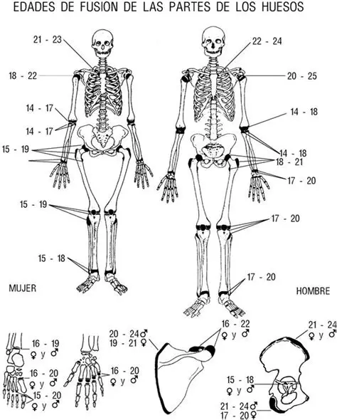
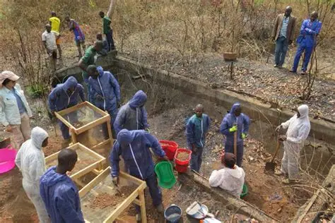

Antropología Forense: El Secreto de los Huesos
Cuando el tiempo, el clima o las circunstancias destruyen los tejidos blandos de un cuerpo, las huellas dactilares y la medicina forense tradicional pierden su efectividad. Es en este punto donde la antropología forense entra en escena, encargándose del estudio de los restos óseos para resolver las dudas de la justicia.
El trabajo del antropólogo forense consiste en extraer información directamente del esqueleto. Los huesos no son simples estructuras rígidas; son un registro permanente de la vida de una persona, guardando datos sobre su salud, sus actividades cotidianas y, por supuesto, su muerte.



Al analizar un esqueleto, el especialista busca construir lo que se conoce como el perfil biológico. Este perfil responde a cuatro preguntas fundamentales:
- Sexo: Determinado principalmente por la estructura de la pelvis y el cráneo.
- Edad: Evaluada mediante el desgaste de las articulaciones y la fusión de los huesos.
- Estatura: Calculada utilizando ecuaciones matemáticas basadas en la longitud de los huesos largos como el fémur.
- Ancestro / Afinidad genética: Rasgos específicos en la estructura facial que orientan sobre el origen étnico.
Además, estos expertos son capaces de identificar traumas perimortem (lesiones ocurridas cerca del momento de la muerte), ayudando a los investigadores a determinar si los impactos visibles en el hueso fueron causados por armas o caídas.